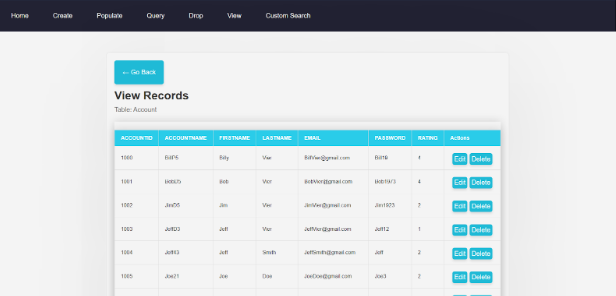
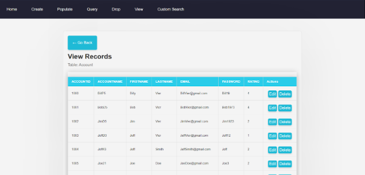

Winter Messages
This project is a real-time chat application built using React and Firebase Firestore. It showcases my ability to create interactive and dynamic web applications with a focus on real-time data synchronization. The application allows users to engage in conversations, with each message update being instantly reflected across all connected clients. Utilizing Firebase's powerful backend services, the app handles user authentication and real-time database updates seamlessly. The project demonstrates my proficiency in using modern web development tools and frameworks to create a responsive and user-friendly chat interface.
 
